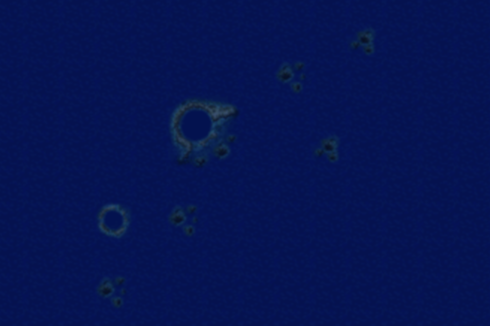

В прошлом месяце в сеть утекло сообщение,
из которого стало известно, что известный журналист и историк Бретт Томпсон,
работавший над фильмом Warriors and the Belkan War, намерен начать
расследование для нового документального фильма о секретной эскадрилье Норденавика.
Благодаря своему расследованию для предыдущего фильма Бретт зарекомендовал
себя как знаток своего дела, весь мир с нетерпением ждёт результатов расследования.
Согласно имеющейся информации, Грендел была создана для предотвращения любых потенциальных
угроз нейтралитету Норденнавика.
Ходят слухи, то эскадрилья действовала во время Усейского беженского конликта, К
онтинентальной войны, Тихоокеанской войны, Эстовакской гражданской войны и Эммерийско-Эстовакской войны под полной секретностью.